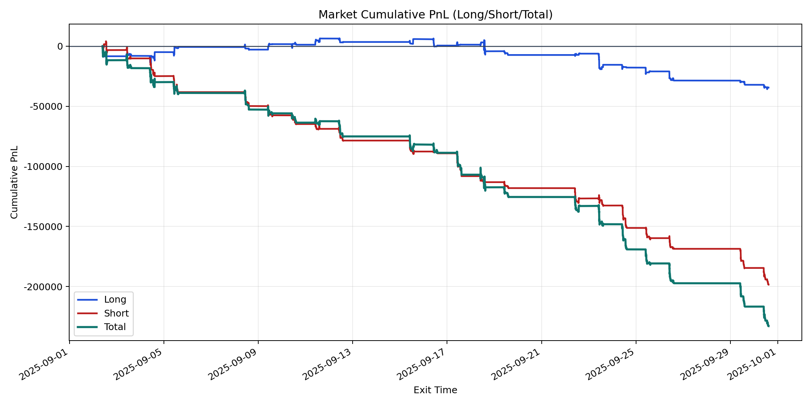
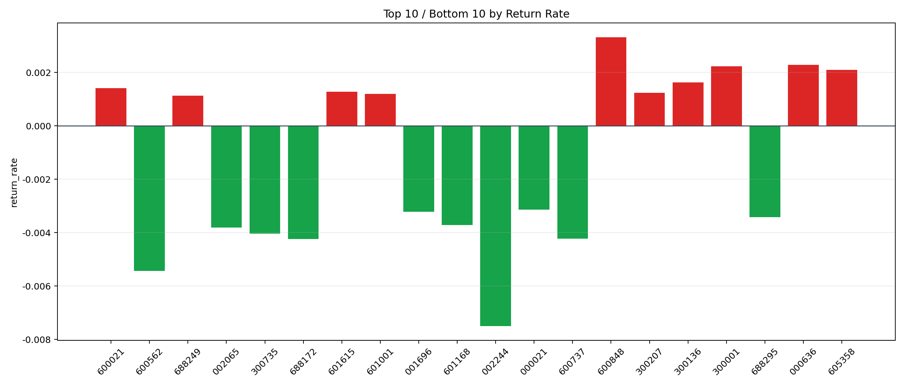

| repo_root | /home/haoranyou/data/output/dynamic_AUM_TAKER_index500 |
|---|---|
| period_months | 1 |
| period_label | 2025-09-02_to_2025-09-30 |
| start_time | 2025-09-02 09:46:02 |
| end_time | 2025-09-30 14:42:02 |
| n_trades | 12634 |
| n_symbols | 111 |
| total_pnl | -232855.64685000095 |
| long_total_pnl | -34489.28569999861 |
| short_total_pnl | -198366.3611500023 |
| total_entry_notional | 227727727.0 |
| long_entry_notional | 78820881.0 |
| short_entry_notional | 148906846.00000003 |
| total_return_rate | -0.0010225177667978961 |
| long_return_rate | -0.00043756534134652223 |
| short_return_rate | -0.001332150713540748 |
| top_symbols_by_return | ["600848", "000636", "300001", "605358", "300136", "600021", "601615", "300207", "601001", "688249"] |
| bottom_symbols_by_return | ["002244", "600562", "688172", "600737", "300735", "002065", "601168", "688295", "001696", "000021"] |

